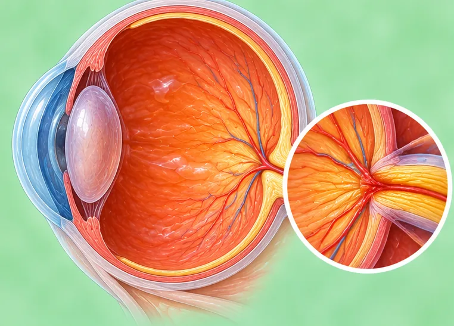

Glaukoma akut
Kenaikan mendadak tekanan bola mata yang merupakan keadaan darurat medis
Apa itu
Pada glaukoma akut, cairan di dalam mata tidak bisa mengalir keluar, sehingga tekanan bola mata naik dengan cepat. Perlu penanganan segera dari dokter mata untuk melindungi penglihatan.
- Satu mata, bagian dalam
- Lebih sering pada lansia
- Nyeri mata hebat, penglihatan kabur
- Dokter yang dituju
- Dokter spesialis mata segera
- Sering pada
- Orang dewasa paruh baya ke atas; penderita rabun dekat; riwayat keluarga
- Menular
- Tidak
- Perjalanan
- Bisa merusak penglihatan dengan cepat bila tidak segera diperiksa; penanganan dini oleh dokter sangat penting
Tanda umum

Penglihatan kaburPandangan buram 
Merasa mualMual
Tanda lain
- Nyeri hebat mendadak di satu mata
- Mata merah dan sakit kepala di sisi yang sama
Mengapa terjadi

Efek samping beberapa obatEfek samping obat 
Penyebabnya belum sepenuhnya diketahuiIdiopatik
Penyebab lain
- Sudut saluran pembuangan yang sempit di dalam mata tiba-tiba menyumbat aliran cairan
- Rabun dekat, usia lanjut, atau riwayat keluarga
Periksa ke dokter lebih dulu jika
- Nyeri mata mendadak dengan penglihatan kabur, sakit kepala, atau muntah: segera ke rumah sakit
- Hilang penglihatan mendadak pada satu mata: segera ke rumah sakit
- Melihat lingkaran pelangi di sekitar lampu dengan mata merah dan terasa keras
- Mata sangat keras atau sangat nyeri setelah cedera
Jika ada yang sesuai, silakan periksa ke dokter sebelum sesi.
Halaman ini berisi informasi umum. Tetap minum obat Anda seperti biasa dan tetap kontrol ke dokter.
Tetap minum obat Anda seperti biasa dan tetap kontrol ke dokter. Sesi kami adalah dukungan yang lembut dan tidak menggantikan perawatan medis.
Merawat diri

Kontrol rutin ke dokterKontrol medis rutin 
Tanyakan kepada apotekerSaran apoteker
Cara lain merawat diri
- Jangan menunggu di rumah; perlu dokter pada hari itu juga
- Jangan menyetir sendiri; minta seseorang mengantar Anda
Beri tahu terapis Anda
- Diabetes atau kulit kurang berasa
- Tekanan darah tinggi
- Masalah jantung
- Kehamilan
Terapis akan membahasnya bersama Anda sebelum mulai.
Tanya jawab
Apa itu Glaukoma akut?
Kenaikan mendadak tekanan bola mata yang merupakan keadaan darurat medis. Pada glaukoma akut, cairan di dalam mata tidak bisa mengalir keluar, sehingga tekanan bola mata naik dengan cepat. Perlu penanganan segera dari dokter mata untuk melindungi penglihatan.
Apa saja tanda umum Glaukoma akut?
Penglihatan kabur · Merasa mual
Mengapa Glaukoma akut terjadi?
Efek samping beberapa obat · Penyebabnya belum sepenuhnya diketahui
Bagaimana merawat diri saat mengalami Glaukoma akut?
Kontrol rutin ke dokter · Tanyakan kepada apoteker
Apakah sesi AI Body Master bisa membantu Glaukoma akut?
Sesi ini adalah dukungan meridian yang lembut tanpa jarum untuk kebugaran Anda. Sesi ini bukan pengobatan untuk Glaukoma akut dan tidak menggantikan obat atau dokter Anda. Beri tahu terapis Anda sebelum sesi dimulai.
Kondisi terkait
- Katarak
- Konjungtivitis virus (mata merah)
- Bintik melayang di mata (kekeruhan vitreus)
- Bulu mata tumbuh ke dalam (trikiasis)
- Bintik melayang di mata
- Penglihatan ganda (diplopia)
- Mata kering
- Rabun jauh berat (miopia tinggi)
- Penyakit Alzheimer
- Dermatitis seboroik (ruam mirip ketombe)
- Bibir mengelupas (keilitis eksfoliatif)
- Keratosis amandel
Referensi: General information based on public health sources such as Mayo Clinic, NHS, Cleveland Clinic and NCBI StatPearls.
Halaman diperbarui: 2026-11-09